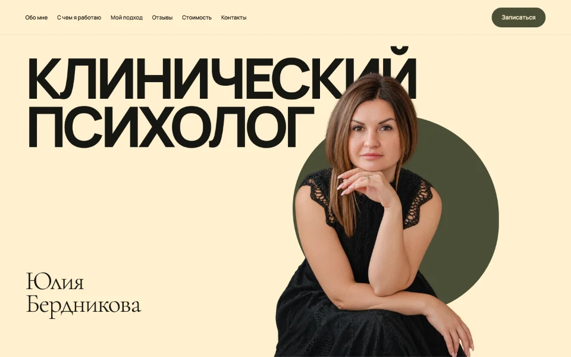
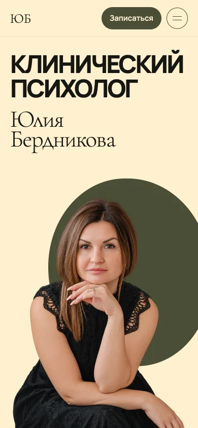
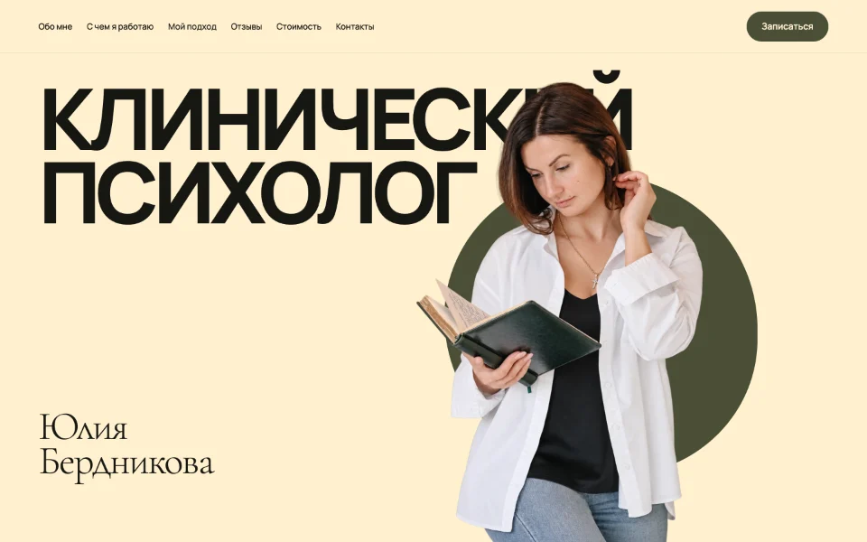
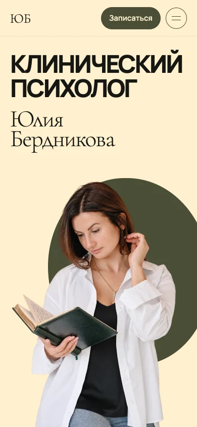
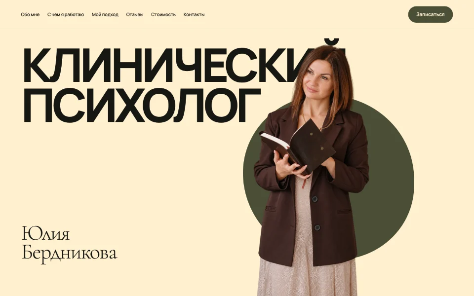
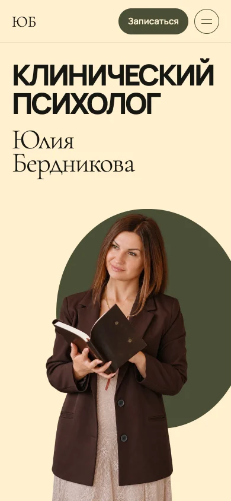

Вариант 01



Предпросмотр · не опубликовано на сайте
Одна и та же утверждённая композиция с разными фотографиями. Откройте вариант, чтобы посмотреть его в полном размере; страница подстраивается под ширину экрана.






Демонстрационные страницы: кнопки записи и меню отключены, страницы закрыты от индексации.